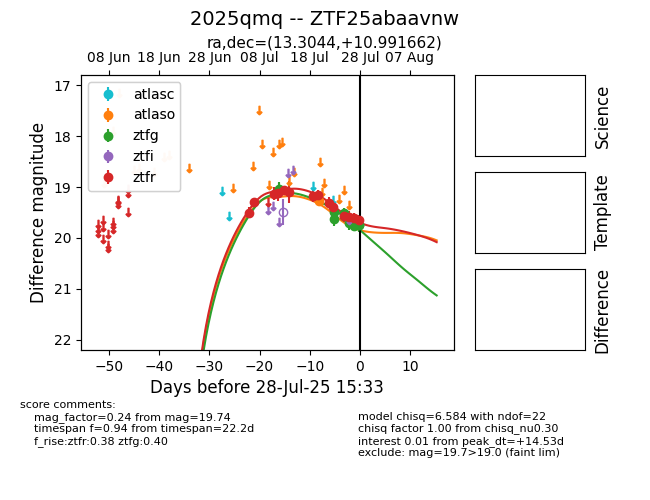

Target 2025qmq at 2025-07-28 15:33, see:
FINK: fink-portal.org/2025qmq
Lasair: lasair-ztf.lsst.ac.uk/objects/2025qmq
ALeRCE: alerce.online/object/2025qmq
TNS: wis-tns.org/object/2025qmq
YSE: ziggy.ucolick.org/yse/transient_detail/2025qmq
alt names
ZTF25abaavnw (ztf,fink)
2025qmq (tns,yse)
coordinates:
equatorial (ra, dec) = (13.3044,+10.99166)
galactic (l, b) = (123.6394,-51.87764)
photometry
last atlaso=19.27, ztfg=19.74, ztfr=19.65
1 atlaso, 11 ztfg, 14 ztfr detections
